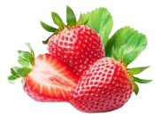

Sobre o morango
O morango é uma fruta vermelha, cuja origem é a Europa.
Produzida pelo morangueiro, é um fruto rasteiro.
Existem várias espécies de morango, sendo a fragaria a mais comum e cultivada em várias partes do mundo.
plantio do morangueiro é feito através de mudas. Para o plantio, devem-se obter mudas de viveiristas idôneos, produtivas e livres de doenças e pragas. As mudas devem ser produzidas em regiões altas e frias, para assegurar a qualidade.
Para obtenção de frutas de qualidade, um dos pré-requisitos essenciais é a utilização de mudas de alta
qualidade genética e sanitária, em local de baixo potencialidade de inóculo de fungos e bactérias que
sejam agressivos ao morangueiro. Quando as mudas forem arrancadas, deve ser efetuada uma limpeza (toillete), aparando as folhas e
reduzindo um pouco o sistema radicular, se for o caso. As mudas devem ser padronizadas quanto ao
diâmetro da coroa, uma vez que a operação de plantio será facilitada, melhorará o estande e
uniformizará a colheita.O mercado mundial, consumidor de frutas in natura ou processadas, tem demandado procedimentos
fitossanitários rigorosos para a importação desses produtos, o que exige uma visão diferenciada na
produção de frutas, priorizando a qualidade e o meio ambiente.
Os produtores devem conservar os recursos naturais solo, água, matas ciliares, matas nativas e vida
selvagem no entorno do seu pomar, que não devem ser alterados de modo danoso, eliminados ou
contaminados. A diversidade de espécies vegetais, animais e microorganismos do solo, favorece o
equilíbrio ecológico, minimizando a necessidade de pesticidas e o emprego de fertilizantes químicos.
Desta forma, os riscos e os níveis de poluição decorrentes, nas águas superficiais e subterrâneas,
especialmente de nitratos e herbicidas, serão minimizados ou eliminados.Os morangos são frutos muito perecíveis, portanto as perdas pós-colheita podem alcançar níveis
importantes, caso não sejam utilizadas técnicas corretas de colheita e pós-colheita. Estas perdas podem
ser de caráter quantitativo e/ou qualitativo, o que implicará em prejuízos para o produtor, o comerciante
e o consumidor.
Os morangos, enquanto cultivados em condições de campo, estão respirando e continuam a fazê-lo
durante a fase de pós-colheita. De acordo com o modelo de respiração, as frutas podem ser divididas
em: climatéricas e não climatéricas, o morango está no grupo das frutas não climatéricas nas quais
ocorre uma diminuição gradual da respiração e não há produção de etileno endógeno.A colheita começa aproximadamente aos 60/80 dias após o plantio das mudas, dependendo das
condições climáticas, do tipo de solo, dos tratos culturais, do método de produção de mudas e da
cultivar, podendo-se prolongar por 4 a 6 meses, em função do fotoperíodo e disponibilidade de água. A
época de colheita varia de agosto a dezembro em regiões mais frias, como o Sul do Brasil.
A colheita do morango é uma das operações mais delicadas e importantes de todo o ciclo da cultura. Os
frutos do morangueiro são muito delicados e pouco resistentes, em virtude da epiderme delgada, grande
percentagem de água e alto metabolismo, o que exige muitos cuidados durante a colheita. Se forem
colhidos muito maduros, poderão chegar em decomposição e com podridões ao mercado; se forem
colhidos ainda verdes, terão alta acidez, adstringência e ausência de aroma. Em ambos os casos, o
produto chega ao mercado com baixo valor comercial.
A colheita realiza-se de forma manual, no ponto de colheita "maduro" para fins industriais.A embalagem adequada é importante para evitar danos físicos ao produto. Estas embalagens devem ser
novas, limpas e não provocar alterações internas ou externas na fruta. Com essas atividades a indústria sempre tenta trazer uma boa alimentação e bons produtios.
Em geral, o morango pode ser conservado à temperatura de 0ºC com 90-95% de umidade relativa
durante 3-5 dias. È essencial que durante o transporte seja refrigerado pois assim pode-se manter a
cadeia do frio.
